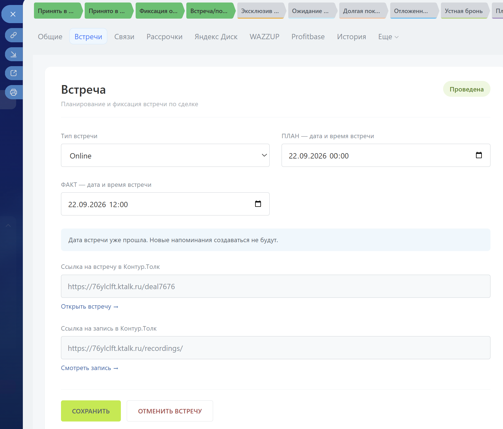

Данные остаются в сделке
Вкладка работает с пользовательскими полями существующей сделки. Отдельная сущность встречи и отдельная база данных не создаются; те же поля доступны для будущего BI.
Аспекта / Кейс портфолио
Планирование встреч в сделке Битрикс24, автоматические статусы и дела-напоминания. Подготовка данных для анализа встреч и работы отдела продаж.
Менеджер планирует Online- или Offline-встречу прямо в карточке сделки Битрикс24. Решение объединяет дату, результат, напоминания и ссылки Контур.Толк, а структурированные поля готовят основу для последующей аналитики отдела продаж.

Вкладка работает с пользовательскими полями существующей сделки. Отдельная сущность встречи и отдельная база данных не создаются; те же поля доступны для будущего BI.
Первое назначение записывает первоначальную дату один раз. При переносе меняется текущий ПЛАН, а исходная дата остаётся для сравнения отчётных периодов.
Первое назначение — «Запланирована», изменение ПЛАНА — «Перенесена», заполнение ФАКТА — «Проведена». ФАКТ имеет приоритет. Отмена выполняется отдельной кнопкой с подтверждением.
Дела CRM создаются при сохранении с нужными сроками. При переносе старые активные дела приложения удаляются и рассчитываются новые; после проведения или отмены будущие напоминания удаляются.
Для анализа важно сохранить не только итог «встреча проведена», но и то, на какую дату она была назначена изначально.
Если до встречи не менее 24 часов, создаются дела для подтверждения за сутки и напоминания за час. При интервале менее суток, но более часа — напоминание за час; менее часа, но не менее 15 минут — за 15 минут. Когда остаётся меньше 15 минут, новое напоминание не создаётся.
Дела создаются сразу при сохранении ПЛАНА и получают соответствующий дедлайн. Серверный cron в рабочей схеме не используется. Поиск старых напоминаний ограничен текущей сделкой и названиями дел приложения.
Приложение размещено на PHP-хостинге и работает через BX24 JS API: crm.deal.get, crm.deal.update и crm.activity.todo.add. Отдельная серверная база встреч не используется.
В регламенте зафиксирована ошибка при попытке создания произвольного дела CRM: выбранный вариант не поддерживался в этом контексте. После перехода на crm.activity.todo.add создание дел было успешно проверено.
Интеграцию с Контур.Толк выполняет уже существующий БП. Приложение использует полученные им ссылки, сохраняя общий процесс работы менеджера в сделке.
Это набор проверок для сопровождения приложения; он не означает, что все перечисленные сценарии повторно протестированы при подготовке портфолио.
Приложение уже готовит поля для аналитики. Описанные ниже отчёты и правила расчёта — следующий этап проекта; готовый BI-дашборд в этом кейсе пока не представлен.
| Вопрос бизнеса | Данные и правило анализа |
|---|---|
| Сколько встреч состоялось? | Встречи с заполненным ФАКТОМ учитываются в периоде фактического проведения. Разрезы: менеджер, тип Online/Offline, неделя и месяц. |
| Что произошло со встречами, назначенными на месяц? | Группа по первоначальной дате: проведены, отменены, перенесены за границы периода или пока без ФАКТА. Для исторического среза понадобится состояние на дату отчёта. |
| Какие встречи перенесли в другой период? | Сопоставление первоначальной даты, текущего ПЛАНА и ФАКТА. Перенос внутри месяца и перенос в следующий месяц показываются отдельно. |
| Где остались встречи без результата? | ПЛАН уже прошёл, ФАКТ пуст и встреча не отменена. Это список для уточнения результата, а не автоматический вывод о неявке клиента. |
| Как различается работа менеджеров? | Назначенные, проведённые и текущие отменённые встречи; отклонения дат. Долю проведённых считаем в одной согласованной группе встреч, с учётом периода наблюдения. |
| Как встречи связаны с продажами? | Предлагаемый следующий отчёт: движение сделки после встречи, конверсия в бронь и договор. Для него нужны согласованные стадии, история переходов и окно наблюдения. |
Перенос внутри месяца. Первоначально 20 августа, новый ПЛАН 25 августа, ФАКТ 25 августа. Итоговый статус — «Проведена»; в отчёте за август это проведённая встреча, которая также имела перенос.
Перенос в следующий месяц. Первоначально 30 августа, новый ПЛАН 3 сентября, ФАКТ пока пуст. В анализе августовского плана это перенос за границы периода. Если встреча затем состоится, её проведение попадёт в сентябрь по ФАКТУ.
Список текущих отменённых встреч можно построить по статусу. Чтобы точно считать события отмены и переноса за прошлые периоды, потребуется история изменений с датами.
Текущая модель содержит один набор полей встречи в сделке. Первоначальная и текущая даты позволяют увидеть итоговое изменение, но не восстановить все промежуточные переносы, повторные отмены или несколько отдельных встреч.
Для подсчёта таких событий планируем отдельно фиксировать историю: идентификатор встречи, сделку, дату изменения, прежний и новый ПЛАН, статус и менеджера на момент события. Перед BI сверим часовые пояса, полноту полей и правила учёта ответственного.
Ссылка на видеозапись даёт основу для отдельного направления: после получения записи и расшифровки можно выделять потребности клиента, возражения, договорённости и следующий шаг менеджера.
Это предложение для дальнейшего развития. Автоматическая расшифровка и анализ ИИ в текущем регламенте не описаны как реализованные. Выводы такого анализа нужно проверять по записи, отделяя слова клиента от предположений модели.
Дата, результат и ссылки доступны менеджеру в контексте клиента.
Изменение встречи связано с обновлением дел CRM.
Первоначальная дата, ПЛАН и ФАКТ позволяют согласовать правила будущих отчётов.